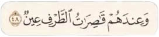
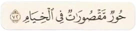
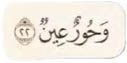
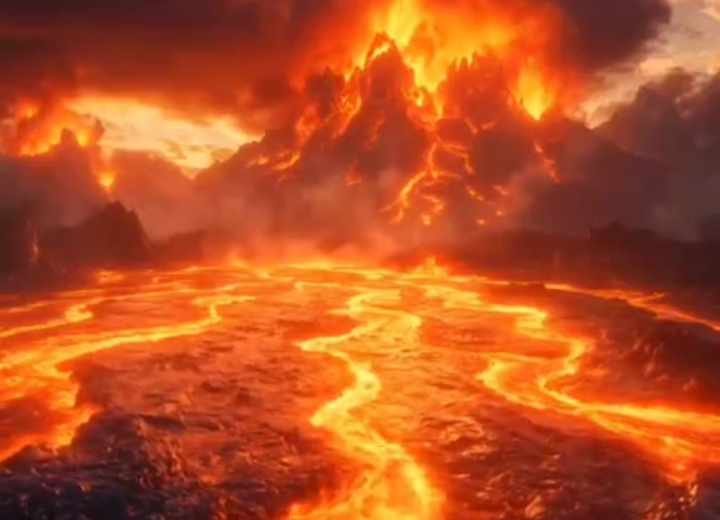
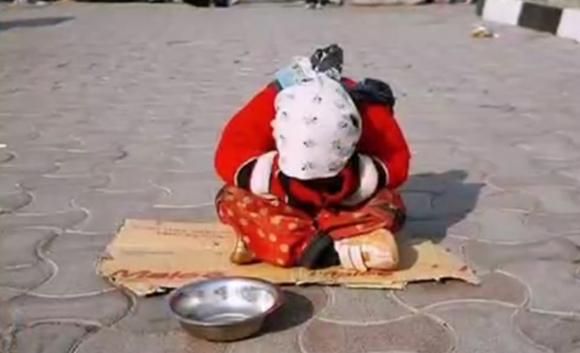
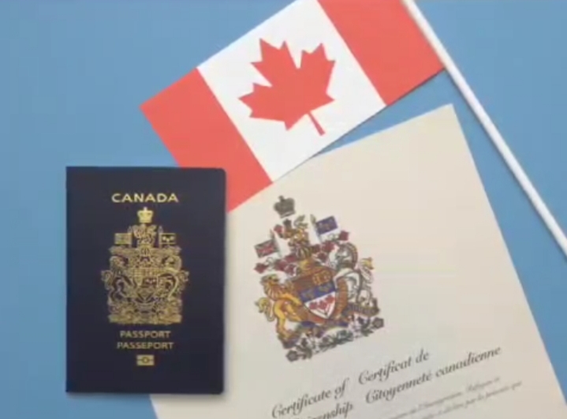
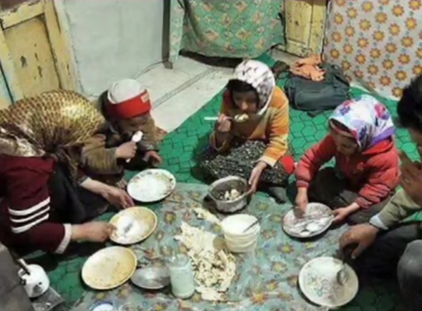

بهشت مکانی زیبا ، آرامش بخش و پاداشی برای نیکوکارانه افرادی که در زمین خدا را عبادت کردن و از ظلم و خیانت و دروغگویی دوری کردن
در قرآن 147 بار از بهشت یاد شده محلی برای آرامش نفس رهایی از درد و رنج و بی عدالتی پاداش پاکی و درستکاری همنشینی با صالحان و مشاهده رحمت و رضوان الهی
اما فقط 4 بار از حوری سخن گفته شده
1. سوره صافات آیه 48

2. دخان آیه 54
3. رحمن آیه 72

4. سوره واقعه آیه 22

یعنی کمتر از 3درصد اونم بعنوان همسران پاک
پس بهشت نه برای شکمه نه برای پایین تنه ، بلکه بهشت پاداش خدمت به مردم صداقت و مهربانی ، پاکی انسان و عبادت روی زمینه
اما جهنم جای طالمان و ریاکارانه ، جای افرادیه که به مردم ظلم میکنن اونها را در فقر نگه میدارن ، خیانت و اختلاس میکنن


جهنم جای مسئولینیه که میگن اروپا و آمریکا بَده اما برای فرزندان خودشون تابعیت اروپا و آمریکا و کانادا میگیرن

ظاهرا آدم های مذهبی ان واما در عمل حق مردم رو می خورند ، مردم رو به قناعت تشویق میکنن اما خودشون و خانواده هاشون به بیت المال وصلن

اما چرا عملکرد بد این افراد رو به اسلام ربط میدید ؟
چرا دین رو مقصر میدونین ؟
هرساله بیش از سه میلیون نفر در جهان بر اثر خطای پزشکی جونشون رو از دست میدن اما هیچ کس نمیگه علم پزشکی باید نابود بشه بلکه میگن دکتر مقصر
سالانه بیش از یک میلیون نفر در تصادفات جاده ای میمیرن اما هیچکس نمیگه رانندگی و جاده سازی رو باید نابود کرد یا صنعت خودروسازی باید متوقف بشه بلکه میگن راننده مقصره و بی احتیاطی کرده که قوانین رو رعایت نکرده
تو بقیه زمینه ها هم همینطوره اما وقتی به مسلمون ها میرسه میگن اسلام مقصره نمیگن اون فرد سوء استفاده کرده و برخلاف دستورات قرآن عمل کرده
بدبختی ها از توهم آسمونی نمیاد از نَفسِ پست آدم ها میاد ، آدم هایی که از هر ابزاری برای ظلم در حق دیگران استفاده میکنن